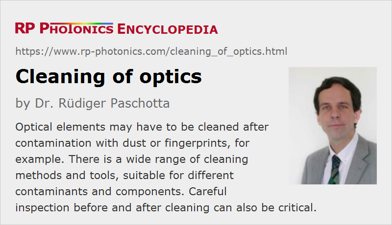

Cleaning of Optics
Definition: cleaning of optical elements
German: Reinigung optischer Komponenten
How to cite the article; suggest additional literature
Author: Dr. Rüdiger Paschotta
Optical elements and systems are usually operated in a rather clean environment, e.g. within a housing which is protected against dust and dirt with optical windows, or in a clean laser laboratory. Nevertheless, it is sometimes necessary to clean optical elements like laser mirrors, lenses, laser crystals and nonlinear crystals – for example,
- when dust particles have been deposited from circulating air,
- when components have been touched with a finger during the handling (which should of course be avoided), or
- when fumes have been burned by intense laser beams and deposited on optical surfaces.
In conjunction with intense laser beams, dust and smudges may not only lead to performance degradations, but even to permanent damage of optical components, when such contaminations are burned in.
Careful cleaning procedures and the use of appropriate cleaning equipment are important for two reasons:
- Optical components often need to be very clean for reaching optimal performance. This is particularly the case for any components in interferometers and for mirrors in laser resonators. Even the slightest residues from fingerprints, for example, can be very detrimental.
- There is a risk of damaging sensitive optical components during the cleaning procedure. For example, they may be scratched when being touched with a hard instrument. Some materials may also be damaged by contact with inappropriate solvents; for example, plastic optics and easily damaged by acetone, and some hygroscopic crystal materials may be damaged through contact with water.
Note, however, that perfect cleanliness is not essential in all cases. For example, some dust particles on a photographic objective will not produce isolated defects in photographic images, because they are not imaged to the light sensor and only lead to well spread modifications which are hard to detect and thus hardly disturbing.
Avoiding Contaminations
Ideally, the cleaning of optical elements is unnecessary because any contaminations are avoided. Also, one should of course avoid any unnecessary contaminations during cleaning procedures. Some suitable measures are briefly explained in the following:
- Whenever possible, particularly sensitive optical setups like laser resonators end and interferometers should be encapsulated with an air-tight housing, avoiding any risk that dust can get inside through the air.
- Assembly and maintenance operations should be performed in a very clean area. Within a laser laboratory, one may for example have a workplace with a laminar flow box, possibly further protected against the less clean environment with suitable shields. Such a region should only be entered with clean and appropriate clothing (e.g. not spreading hairs), and any non-appropriate items like dirty tools or materials should be banned there.
- All parts in optical setups should be kept clean, including mounts, for example, because dust may easily move from one part to another.
- When optical components such as lenses and mirrors need to be handled, for example unpacked and inserted into an optical setup, or temporarily removed for inspection and cleaning purposes, it is advisable to use suitable gloves and to touch the components only around the edges, never on optical surfaces. For some optical components e.g. of microoptic type, one requires suitable handling tools like vacuum pick-up devices, soft jaw pliers and tweezers, usually made from soft materials (not e.g. metals) to minimize the risk of accidental damage e.g. by scratching or knocking.
- For storing optical components, one can wrap them in clean lens tissue or put them into soft pergamine bags before placing them in suitable optics storage boxes, equipped e.g. with soft foam. Of course, one must avoid that multiple optical elements in a box scratch each other.
High-quality gloves are available for optics cleaning, for example nitrile clean room gloves which are thin enough to give sufficient haptic feedback and at the same time sufficiently resistant for avoiding puncture. Some gloves are optimized for good grip, reducing the risk of dropping sensitive components. When using latex gloves, these should be powder-free. For some operations, fingercots may be sufficient, which can be more comfortable to wear.
Some types of optical components are notoriously sensitive and very hard to clean. Some examples:
- Ruled diffraction gratings have a rippled surface which easily catches dirt. The ripples are generally too sensitive for applying effective cleaning procedures beyond blowing with compressed air.
- Metal-coated mirrors (made as first surface mirrors), e.g. silver, gold or aluminum mirrors are often too soft and sensitive for removing attached dirt like fingerprints. They may then have to be replaced. Particularly sensitive are those mirrors with bare metal, i.e. without protective coatings.
- Certain crystalline optical parts, for example used in infrared optics, are very soft and should not be touched with anything.
Inspection Tools
It is often useful to have suitable inspection tools, with which one e.g. clearly see dust particles, fingerprints and the like. They also allow one to monitor the success of cleaning attempts. One may use an instrument like a loupe, a magnifying glass or a microscope in conjunction with suitable illumination.
It can also be essential to distinguish contaminations from damaged spots; obviously it won't help to wipe over pits and scratches, possibly increasing the damage further.
Obviously, inspection tools can be used effectively only when it is made convenient e.g. to sit at an appropriate height and to lay down or mount the inspected part on clean and soft surfaces. Sufficient illumination is also critical.
In some cases, proper inspection is not possible, e.g. because critical parts are not well accessible or tiny contaminations are sufficient for spoiling performance. This may easily be the case for interferometer mirrors, for example. One may then have to use blind cleaning procedures, where success is assessed only by testing of the optical device performance later on. This can be tedious particularly when multiple mirrors are in a setup and it is difficult to find out which one degrades the performance.
Be Aware of Coatings
When cleaning optical surfaces, one should always be aware that they may have thin coatings (e.g. anti-reflection coatings) which are more sensitive than the bulk material below. Of course, one may not easily recognize the presence of a coating. Some coatings can temporarily incorporate water (e.g. in porous TiO2 layers) which modifies the optical properties; one should then of course avoid water as a cleaning agent.
Using Compressed Air or Dusting Gas
Contaminations which are only lightly attached to optical components, for example dust particles, can often be removed with compressed air – a method which minimizes the risk of damage and can be applied even to particularly sensitive parts such as metal-coated mirrors and diffraction gratings. (Only in few cases such as pellicle beamsplitters, there is a substantial risk of damage.)
Of course, one should never simply blow with the mouth against optical components, since that way one could easily contaminate them with saliva. For occasional use, there are disposable compressed air devices with which one can direct bursts of clean and dry air to optical surfaces. With suitable nozzles, one may even reach areas which would be difficult to clean with any other tools.
There are also cans containing a liquid which evaporates as a dusting gas and can produce larger volumes of gas over time. One should hold them upright during use and not shake them before use, because otherwise droplets of fluid may emerge.
There are also hand-held air blowers with which one can pump air from the room, which is hopefully clean enough.
Cleaning Lenses and Filters
Many lenses and optical filters are made from relatively robust glass materials which can reasonably well be cleaned with appropriate procedures and tools.
It is common to use soft lens tissues, e.g. as disposable wipes which can effectively bind dust while not scratching sensitive surfaces or releasing hair. Also, there are microfiber cleaning cloths which may be used several times. For larger surfaces, one may use precision wiping tissues, which are far cleaner than standard household wipes, for example. Various similar tissues and cloths are available, including pre-moistened towelettes.
It is generally recommended not to repeatedly wipe back and forth on optical surfaces, because that way one may only redistribute contaminants. Instead, it is often better to carefully drag a cloth or lens tissue, wetted with a solvent, across the surface just once, or several times from the center in different directions. Some amount of pressure, which should of course not be excessive, may make the cleaning procedure more effective.
Various solvents may be appropriate, depending on the material and the type of contamination to be removed. For example, distilled or deionized water may be suitable in some cases, but not when removing fat e.g. from fingerprints. Reagent-grade isopropyl alcohol, methanol or acetone are more effective for such purposes. It is essential to use suitable gloves not only to protect the skin of the fingers (which is degraded particularly by acetone), but also to avoid that fat from the skin is dissolved and then deposited on optical surfaces. Performing cleaning processes slowly gives the solvent more time to dissolve contaminants like fat.
Even a glass lens should not be cleaned with acetone if it has a plastic mount, since the acetone could dissolve plastic and deposit it on the lens surface. Alcohol would usually be suitable, but in case of doubt one should ask the supplier.
Note that small amounts of a solvent will rapidly evaporate after application, leaving residues if it has solved some fat, for example. Therefore, it is essential that such contaminants are dragged away, rather than only spread on the surface. Ideally, most of the solvent itself is also dragged away by the tissue; one should therefore avoid using excessive amounts of solvent.
Cleaning Laser Mirrors
Similar considerations as for lenses applied to laser mirrors, only that those are often substantially more sensitive. A frequently used cleaning method is to slowly drag a single sheet of lens tissue, soaked with a drop of a suitable solvent, once across the mirror surface, holding the tissue only at the sides without applying additional pressure.
If the drop-and-drag method is not sufficient, one may have to carefully wipe the surface with some moderate pressure, using multiple layers of lens tissue which are folded and held with a plier. Only the fold of the tissue is used to touch the optical surface, and is slightly soaked with solvent. Of course, one must avoid touching the optical surface with the plier.
Even more effective cleaning is possible by wiping the surface with folded tissue held between fingers (with gloves), applying some more pressure. That more aggressive technique increases the risk of damage, however.
Immersion and Ultrasonic Cleaning
There are devices for ultrasonic cleaning, where optical components such as lenses are immersed in a cleaning solvent (e.g. a solution of optical soap) and exposed to intense ultrasound. Subsequently, they are rinsed with fresh solvent. This method may be useful for removing more persistent dirt, but is too aggressive e.g. for many ruled diffraction gratings.
Alternatively, one may use immersion without ultrasound as a less aggressive, but also less effective technique.
Ensure Uniform Temperatures
It is not advisable to handle optical components which have just taken from a significantly cooler room, for example. One should better let them acquire the room temperature first. Additional stress due to temperature gradients may make optical components more sensitive to cleaning procedures.
Instructions from Suppliers
In some cases, the suppliers of optical components provide detailed instructions for cleaning. It is advisable to carefully observe them in order to clean most successfully and not to lose free replacement options.
A frequent risk is that such instructions are forgotten or lost at the point where they would be needed. To avoid that, it is advisable to use appropriate filing systems (e.g. on paper or computers) so that such documents can be found and retrieved when needed.
Questions and Comments from Users
Here you can submit questions and comments. As far as they get accepted by the author, they will appear above this paragraph together with the author’s answer. The author will decide on acceptance based on certain criteria. Essentially, the issue must be of sufficiently broad interest.
Please do not enter personal data here; we would otherwise delete it soon. (See also our privacy declaration.) If you wish to receive personal feedback or consultancy from the author, please contact him e.g. via e-mail.
By submitting the information, you give your consent to the potential publication of your inputs on our website according to our rules. (If you later retract your consent, we will delete those inputs.) As your inputs are first reviewed by the author, they may be published with some delay.
Suppliers
The RP Photonics Buyer's Guide contains 26 suppliers for optics cleaning equipment. Among them:
|  |
If you like this page, please share the link with your friends and colleagues, e.g. via social media:
These sharing buttons are implemented in a privacy-friendly way!